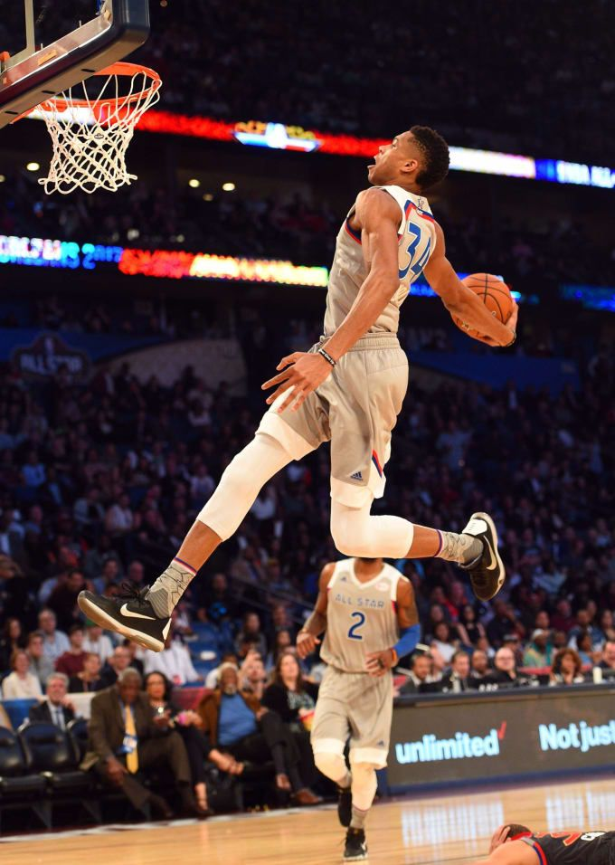

The greek freak is a Professional Basketball player in the NBA Giannis Antetokounpo is known as the GreekFreak. The GreekFreak is unique to giannis because he is greek.In July 2016, Giannis and Thanasis began their mandatory military service in Greece. Antetokounmpo is an avid fan of the Greek multi-sports club Olympiacos. Thanasis made his NBA debut with the New York Knicks after being drafted by the organization with the 51st overall pick in the 2014 NBA draft.Giannis was nicknamed the "Greek Freak" due to his athleticism.

The Reason i look up to giannis is because most people say i look like him and i believe them so i try to focus on the moves he does so i can do them something like how he does.Some people say giannis cant compete with lebron but i believe he can he is athletic like lebron and he has somewhat the same defense as lebron.Last season, he became the first player in NBA history to finish in the top-20 league-wide in all five major statistics: points, rebounds, assists, steals and blocks. He also led his team in all five categories, only the fifth player in NBA history to do so
Antetokounmpo was born in Athens, Greece on December 6, 1994, the son of immigrants from Nigeria Three years earlier, his parents had moved from Lagos, leaving behind their firstborn son, Francis, with his grandparents. Even though Antetokounmpo and three of his four brothers were born in Greece, they did not automatically qualify to receive full greek citizenship. For the first 18 years of his life, Antetokounmpo had no papers from Nigeria or Greece.
In 2012, Antetokounmpo joined the senior squad of filathikinos and played for them in greec's second tier basketball league, the greek A2 league, during the 2012–13 season.
In December 2012, just days after turning 18, Antetokounmpo signed a four-year deal with Spanish club CAI Zaragoza, reportedly including NBA buyouts after each season. A number of other major European clubs had been interested in adding him as well, including Barcelona and Efes, among others. With the contract starting with the 2013–14 season, he decided to stay with the Filathlitikos for the remainder of the 2012–13 season.